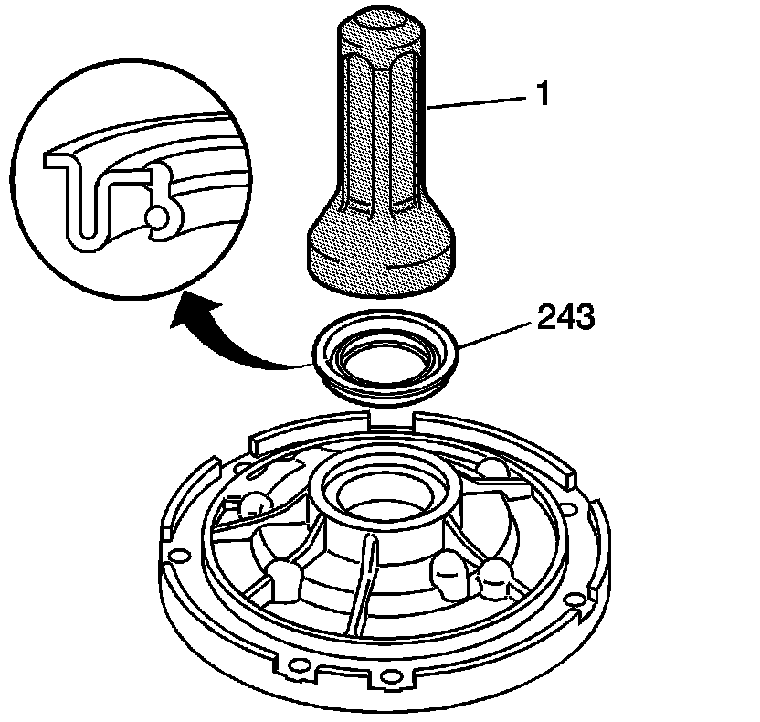
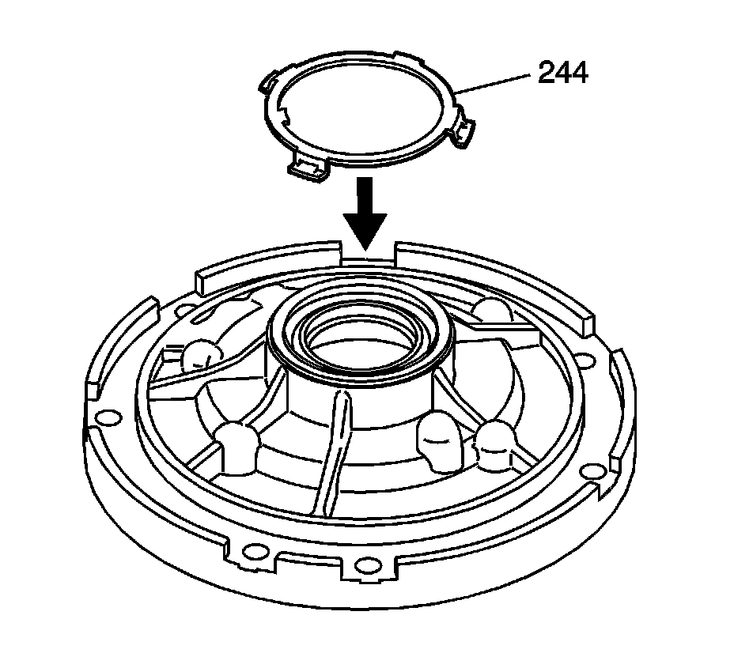
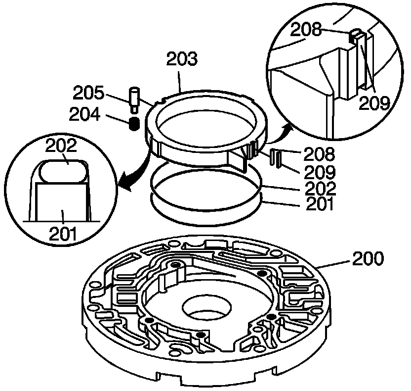
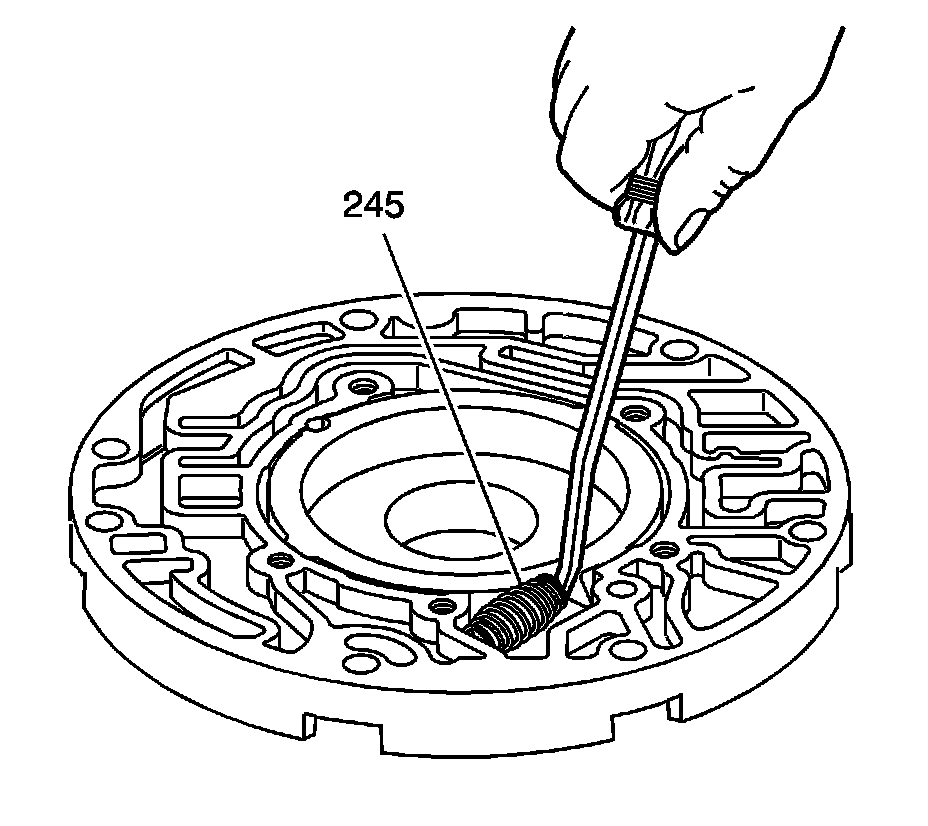
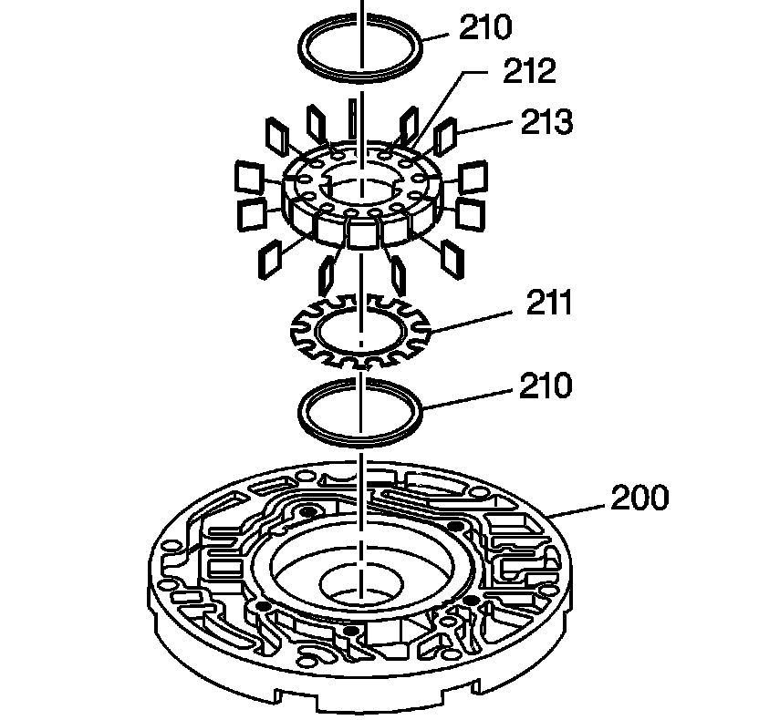

Oil Pump Body Assemble
Oil Pump Body Assemble
Tools Required
^ J 25016 Pump Seal and Speedometer Gear Installer
^ J 36850 Transjel Lubricant

1. Using the J 25016 (1), install the oil seal assembly (243).

2. Install the fluid seal retainer (244).

3. Install an O-ring seal (202) and oil seal ring (201) into the groove on the back side of the pump slide (203).
4. Use J 36850, or an equivalent, to retain the seal and the ring on the slide.
5. Install the pivot pin spring (204) into the pump body pocket.
6. Install the seal support (208) and the pump slide seal (209) into the pump slide (203). Retain with J 36850 or equivalent.
7. Install the pump slide (203).
The oil seal ring must face downward into the pump pocket.
8. Install the pivot pin (205), index the slide notch with the pivot pin.

9. Install the fluid pump slide outer spring (245).

10. Install the rotor guide (211) and the bottom pump vane ring (210) into the rotor (212) and retain with J 36850 or an equivalent.
11. Install the rotor (212) with the rotor guide (211) toward the pump pocket.
12. Install the pump vanes (213). Ensure the vanes are flush with the oil pump body surface.
13. Install the top pump vane ring (210).